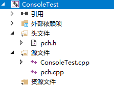
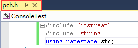
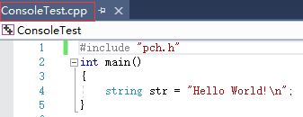
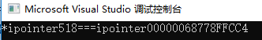
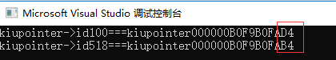
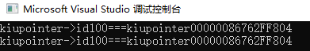
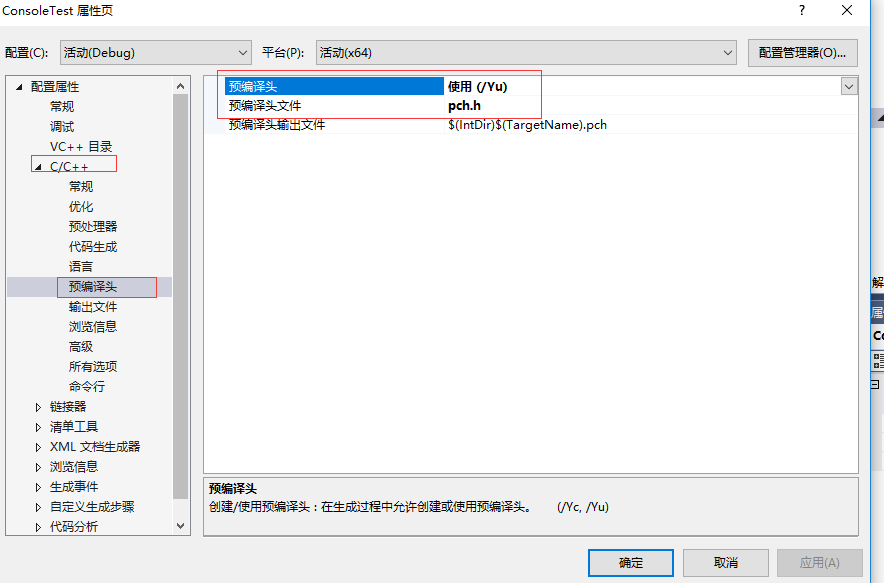
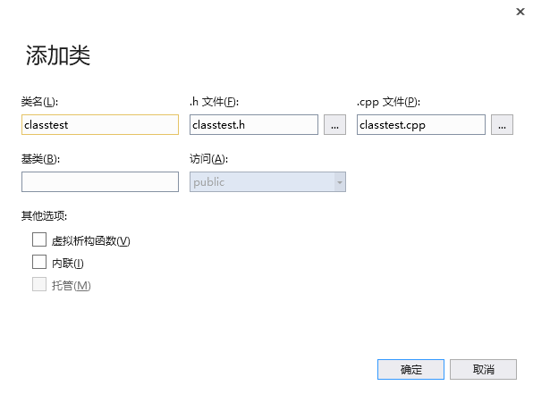
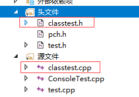

原文连接:https://www.cnblogs.com/kiba/p/10863049.html
对于骂街的C++开发，我在这篇文章里统一回复了《我对C++开发人员有偏见》，请移步。
前言
这是一篇C#开发重新学习C++的体验文章。
作为一个C#开发为什么要重新学习C++呢？因为在C#在很多业务场景需要调用一些C++编写的COM组件，如果不了解C++，那么，很容易。。。注定是要被C++同事忽悠的。
我在和很多C++开发者沟通的时候，发现他们都有一个非常奇怪的特点，都很爱装X，都觉得自己技术很好，还很爱瞧不起人；但如果多交流，会发现更奇怪的问题，他们几乎都不懂代码设计，面向对象和业务逻辑的代码写的也都很烂。
所以，这次重温C++也是想了解下这种奇异现象的原因。
C++重温
首先打开VisualStudio，创建一个C++的Windows控制台应用程序，如下图：

图中有四个文件，系统默认为我打开了头文件和源文件的文件夹。
系统这么做是有意义的，因为刚学习时，外部依赖项，可以暂时不用看，而资源文件夹是空的，所以我们只专注这两个文件夹就可以了。
作为一个C#开发，我对C++就是一知半解，上学学过的知识也都忘记的差不多了，不过，我知道程序入口是main函数，所以我在项目里先找拥有main函数的文件。
结果发现ConsoleTest.cpp 文件里有main函数，那么，我就在这个文件里开始学习C++了，而且它的命名和我项目名也一样，所以很确定，它就是系统为我创建的项目入口文件。
然后我打开ConsoleTest.cpp 文件，定义一个字符串hello world，准备在控制台输出一下，结果发现编译器报错。。。只好调查一下了。
调查后得知，原来，c++里没有string类型，想使用string类型，只能先引用string的头文件，在引用命名空间std，如下：
#include "pch.h"
#include <string>
using namespace std;
int main()
{
string str = "Hello World!\n";
}
头文件
头文件到底是什么呢？
头文件，简单来说就是一部分写在main函数上面的代码。
比如上面的代码，我们将其中的引用头文件和使用命名空间的代码提取出来，写进pch.h头文件；然后，我们得到代码如下图：
pch.h头文件：

ConsoleTest.cpp文件：

也就是说，头文件是用来提取.cpp文件的代码的。
呃。。。好像头文件很鸡肋啊，一个文件的代码为什么要提取一部分公共的？写一起不就好了！为什么要搞个文件来单独做，多傻的行为啊！
好吧，一开始我也的确是这么想的。
后来我发现，头文件，原来并不是单纯的提取代码，还是跨文件调用的基础。
也就是说，ConsoleTest.cpp文件，想调用其他Cpp文件的变量，必须通过头文件来调用。
比如，我新建一个test.cpp和一个test.h文件。
然后我在test.cpp中，定义变量test=100；如下：
#include "pch.h" #include "test.h" int test = 100;
接着我在test.h文件中再声明下test变量，并标记该变量为外部变量，如下。
extern int test;
现在，我在回到ConsoleTest.cpp文件，引用test.h文件；然后我就可以在ConsoleTest.cpp文件中使用test.cpp中定义的test变量了，如下：
#include "pch.h"
#include "test.h"
int main()
{
string str = "Hello World!\n";
cout << test << endl;
}
如上述代码所示，我们成功的输出了test变量，其值为100。
到此，我们应该了解到了，头文件的主要作用应该是把被拆散的代码，扭到一起的纽带。
----------------------------------------------------------------------------------------------------
PS：我在上面引用字符串头文件时，使用的引用方法是【#include <string>】；我发现，引用该头文件时，并没有加后缀.h；我把后缀.h加上后【#include <string.h>】，发现编译依然可以通过。
简单的调查后得知，【#include <string>】是C++的语法，【#include <string.h>】是语法。因为C++要包含所有C的语法，所以，该写法也支持。
Cin与Cout
Cin与Cout是控制台的输入和输出，我在测试时发现，使用Cin与Cout需要引用iostream头文件【#include <iostream>】，同时也要使用命名空间std。
#include <iostream> using namespace std;
在上面，我们提到过，使用字符串类型string时，需要引用头文件string.h和使用命名空间std，那么现在使用Cout也要使用命名空间std。这是为什么呢？
只能推断，两个头文件string.h和iostream.h在定义时，都定义在命名空间std下了。而且，通过我后期使用，发现还有好多类和类型也定义在std下了。
对此，我只能说，好麻烦。。。首先，缺失基础类型这种事，就很奇怪，其次不是一个头文件的东西，定义到一个命名空间下，也容易让人混乱。
不过，对于C++，这么做好像已经是最优解了。
----------------------------------------------------------------------------------------------------
PS：Cin与Cout是控制台的输入和输出，开始时，我也不太明白，为什么使用这样两个不是单词的东西来作为输入输出，后来，在调查资料时，才明白，原来这个俩名字要拆开来读。
读法应该是这样的C&in和C&out，这样我们就清晰明白的理解了该函数了。
define，typedef，指针，引用类型，const
define
首先说define，define在C++里好像叫做宏。就定义一个全局的字符串，然后再任何地方都可以替换，如下：
#include "pch.h"
#include "test.h"
#define ERROR 518
int defineTest()
{
return ERROR;
}
int main()
{
cout << defineTest() << endl;
}
也就是说，define定义的宏，在C++里就是个【行走的字符串】，在编译时，该字符串会被替换回最初定义的值。这。。。这简直就是编译器允许的bug。。。
不过，它当然也有好处，就是字符串更容易记忆和理解。但是说实话，定义一个枚举一样好记忆，而且适用场景更加丰富，所以，个人感觉这个功能是有点鸡肋，不过C++好多代码都使用了宏，所以还是需要了解起来。
typedef
typedef是一个别名定义器，用来给复杂的声明，定义成简洁的声明。
struct kiba_Org {
int id;
};
typedef struct kiba_new {
int id;
} kiba;
int main()
{
struct kiba_Org korg;
korg.id = 518;
kiba knew;
knew.id = 520;
cout << korg.id << endl;
cout << knew.id << endl;
}
如上述代码所示，我定义了一个结构体kiba_Org，如果我要用kiba_Org声明一个变量，我需要这样写【struct kiba_Org korg】，必须多写一个struct。
但我如果用typedef给【struct kiba_Org korg】定义一个别名kiba，那么我就可以直接拿kiba声明变量了。
呃。。。对此，我只能说，为什么会这么麻烦！！！
以为这就很麻烦了吗？NO！！！还有更麻烦的。
比如，我想在我定义的结构体里使用自身的类型，要怎么定义呢？
因为在C++里，变量定义必须按照先声明后使用的【绝对顺序】，那么，在定义时就使用自身类型，编译器会提示错误。
如果想要让编译器通过，就必须在使用前，先给自身类型定义个别名，这样就可以在定义时使用自身类型了。
呃。。。好像有点绕，我们直接看代码。
typedef struct kibaSelf *kibaSelfCopy;
struct kibaSelf
{
int id;
kibaSelfCopy myself;
};
int main()
{
kibaSelf ks;
ks.id = 518;
kibaSelf myself;
myself.id = 520;
ks.myself = &myself;
cout << ks.id << endl;
cout << ks.myself->id << endl;
}
如上述代码所示，我们在定义结构体之前，先给它定义了个别名。
那么，变量定义不是必须按照先声明后使用的【绝对顺序】吗？为什么这里，又在定义前，可以定义别名了呢？这不是矛盾了吗？
不知道，反正，C++就是这样。。。就这么屌。。。
指针
指针在C++中，就是在变量前加个*号，下面我们定义个指针来看看。
int i = 518; int *ipointer = &i; int* ipointer2 = &i; cout << "*ipointer" << *ipointer << "===ipointer" << ipointer << endl;
如上述代码所示，我们定义了俩指针，int *ipointer 和int* ipointer2。可以看到，我这俩指针的*一个靠近变量一个靠近声明符int，但两种写法都正确，编译器可以编译通过。
呃。。。就是这么屌，学起来就是这么优雅。。。
接着，我们用取地址符号&，取出i变量的地址给指针，然后指针变量*ipointer中ipointer存储的是i的地址，而*ipointer存储的是518，如下图：

那么，我们明明是把i的地址给了变量*ipointer，为什么*ipointer存储的是518呢？
因为。。。就是这么屌。。。
哈哈，不开玩笑了，我们先看这样一段代码，就可以理解了。
int i = 518; int *ipointer; int* ipointer2; ipointer = &i; ipointer2 = &i; cout << "*ipointer" << *ipointer << "===ipointer" << ipointer << endl;
如上述代码所示，我把声明和赋值给分开了，这样就形象和清晰了。
我们把i的地址给了指针（*ipointer）中的ipointer，所以ipointer存的就是i的地址，而*ipointer则是根据ipointer所存储的地址找到对应的值。
那么，int *ipointer = &i;这样赋值是什么鬼？这应该报错啊，应该不允许把i的地址给*ipointer啊。
呃。。。还是那句话，就是这么屌。。。
->
->这个符号大概是指针专用的。下面我们来看这样一段代码来了解->。
kiba kinstance; kiba *kpointer; kpointer = &kinstance; (*kpointer).id = 518; kpointer->id = 518; //*kpointer->id = 518;
首先我们定义一个kiba结构体的实例，定义定义一个kiba结构体的指针，并把kinstance的地址给该指针。
此时，如果我想为结构体kiba中的字段id赋值，就需要这样写【(*kpointer).id = 518】。
我必须把*kpointer扩起来，才能点出它对应的字段id，如果不扩起来编译器会报错。
这样很麻烦，没错，按说，微软应该在编译器中解决这个问题，让他*kpointer不用被扩起来就可以使用。
但很显然，微软没这样解决，编译器给的答案是，我们省略写*号，然后直接用存储地址的kpointer来调用字段，但调用字段时，就不能再用点(.)了，而是改用->。
呃。。。解决的就是这么优雅。。。没毛病。。。
引用类型
我们先定义接受引用类型的函数，如下。
int usage(int &i) {
i = 518;
return i;
}
int main()
{
int u = 100;
usage(u);
cout << "u" << u << endl;
}
如上述代码所示，u经过函数usage后，他的值被改变了。
如果我们删除usage函数中变量i前面的&，那么u的值就不会改变。
好了，那么&符号不是我们刚才讲的取地址吗？怎么到这里又变成了引用符了呢？
还是那句话。。。就是这么屌。。。
呃。。。还有更屌的。。。我们来引用个指针。
void usagePointer(kiba *&k, kiba &kiunew) {
k = &kiunew;
k->id = 518;
}
int main()
{
kiba kiunew;
kiba kiu;
kiba *kiupointer;
kiupointer = &kiu;
kiupointer->id = 100;
kiunew.id = 101;
cout << "kiupointer->id" << kiupointer->id << "===kiupointer" << kiupointer << endl;
usagePointer(kiupointer, kiunew);
cout << "kiupointer->id" << kiupointer->id << "===kiupointer" << kiupointer << endl;
}
如上述代码所示，我定义了两个结构体变量kiunew，kiu，和一个指针*kiupointer，然后我把kiu的地址赋值给指针。
接着我把指针和kiunew一起发送给函数usagePointer，在函数里，我把指针的地址改成了kiunew的地址。
运行结果如下图。

可以看到，指针地址已经改变了。
如果我删除掉函数usagePointer中的【引用符&】(某些情况下也叫取地址符)。我们将得到如下结果。

我们从图中发现，不仅地址没改变，赋值也失败了。
也就是说，如果我们不使用【引用符&】来传递指针，那么指针就是只读的，无法修改。
另外，大家应该也注意到了，指针的引用传递时，【引用符&】是在*和变量之间的，如果*&k。而普通变量的引用类型传递时，【引用符&】是在变量前的，如&i。
呃。。。指针，就是这么屌。。。
const
const是定义常量的，这里就不多说了。下面说一下，在函数中使用const符号。。。没错，你没看错，就是在函数中使用const符号。
int constusage(const int i) {
return i;
}
如代码所示，我们在入参int i前面加上了const修饰，然后，我们得到这样的效果。
i在函数constusage，无法被修改，一但赋值就报错。
呃。。。基于C#，估计肯定不好理解这个const存在的意义了，因为如果不想改，就别改啊，标只读这么费劲干什么。。。
不过我们换位思考一下，C++中这么多内存控制，确实很乱，有些时候加上const修饰，标记只读，还是很有必要的。
PCH
在项目创建的时候，系统为我们创建了一个pch.h头文件，并且，每个.cpp文件都引用了这个头文件【#include "pch.h"】。
打开.pch发现，里面是空代码，在等待我们填写。
既然.pch没有被使用，那么将【#include "pch.h"】删掉来简化代码，删除后，发现编译器报错了。
调查后发现，原来项目在创建的时候，为我们设置了一个属性，如下图。

如图，系统我们创建的pch.h头文件，被设置成了预编辑头文件。
下面，我修改【预编译头】属性，修改为不使用预编译头，然后我们再删除【#include "pch.h"】引用，编译器就不会报错了。
那么，为什么创建文件时，会给我们设置一个预编译头呢？微软这么做肯定是有目的。
我们通过名字，字面推测一下。
pch.h是预编译头，那么它的对应英文，大概就是Precompile Header。即然叫做预编译，那应该在正式编译前，执行的编译。
也就是，编译时，文件被分批编译了，pch.h预编译头会被提前编译，我们可以推断，预编译头是用于提高编译速度的。
类
C++是一个同时面向过程和面向对象的编程语言，所以，C++里也有类和对象的存在。
类的基础定义就不多说了，都一样。
不过在C++中，因为，引用困难的原因（上面已经描述了，只能引用其他.cpp文件对应的头文件，并且，.cpp实现的变量，还得在头文件里外部声明一下），所以类的定义写法也发生了改变。
C++中创建类，需要在头文件中声明函数，然后在.cpp文件中，做函数实现。
但是这样做，明显是跨文件声明类了，但C++中又没有类似partial关键字让俩个文件合并编译，那么怎么办呢？
微软给出的解决方案是，在.Cpp文件中提供一个类外部编写函数的方法。
下面，我们简单的创建一个类，在头文件中声明一些函数和一些外部变量，然后在.cpp文件中实现这些函数和变量。
右键头文件文件夹—>添加——>类，在类名处输入classtest，如下图。

然后我们会发现，系统为我们创建了俩文件，一个.h头文件和一个.cpp文件，如下图。

然后编写代码如下：
classtest.h头文件:
class classtest
{
public:
int id;
string name;
classtest();
~classtest();
int excute(int id);
private:
int number;
int dosomething();
};
calsstest.cpp文件：
#include "pch.h"
#include "classtest.h"
classtest::classtest()
{
}
classtest::~classtest()
{
}
int classtest::excute(int id)
{
this->id = id;
return this->id;
}
int classtest::dosomething()
{
this->number = 520;
return this->number;
}
调用测试代码如下：
#include "pch.h"
#include "classtest.h"
int main()
{
classtest ct;
ct.excute(518);
classtest *ctPointer = new classtest;
ctPointer->excute(520);
cout << "ct.id" << ct.id << "===ctPointer" << ctPointer->id << endl;
}
结语
通过重温，我得出如下结论。
一，C++并不是一门优雅的开发语言，他自身存在非常多的设定矛盾和混淆内容，因此，C++的学习和应用的难度远大于C# ；其难学的原因是C++本身缺陷导致，而不是C++多么难学。
二，指针是C++开发学习设计模式的拦路虎，用C++学习那传说中的26种设计模式，还勉强可以；但，如果想学习MVVM,AOP等等这些的设计模式的话，C++的指针会让C++开发付出更多的代码量，因此多数C++开发对设计模式理解水平很低也是可以理解的了。事实上，C++开发是很难出高级程序员，大部分都被困在中级程序员这个水平线上了。
三，通过学习和反思，发现，我曾经接触的那些爱装X的C++开发，确实是坐井观天、夜郎自大，他们的编写代码的思维逻辑，确确实实是被C++的缺陷给限制住了。
----------------------------------------------------------------------------------------------------
到此，我重温C++的心路历程就结束了。
代码已经传到Github上了，欢迎大家下载。
Github地址：https://github.com/kiba518/C-ConsoleTest
----------------------------------------------------------------------------------------------------
注：此文章为原创，任何形式的转载都请联系作者获得授权并注明出处！
若您觉得这篇文章还不错，请点击下方的【推荐】，非常感谢！